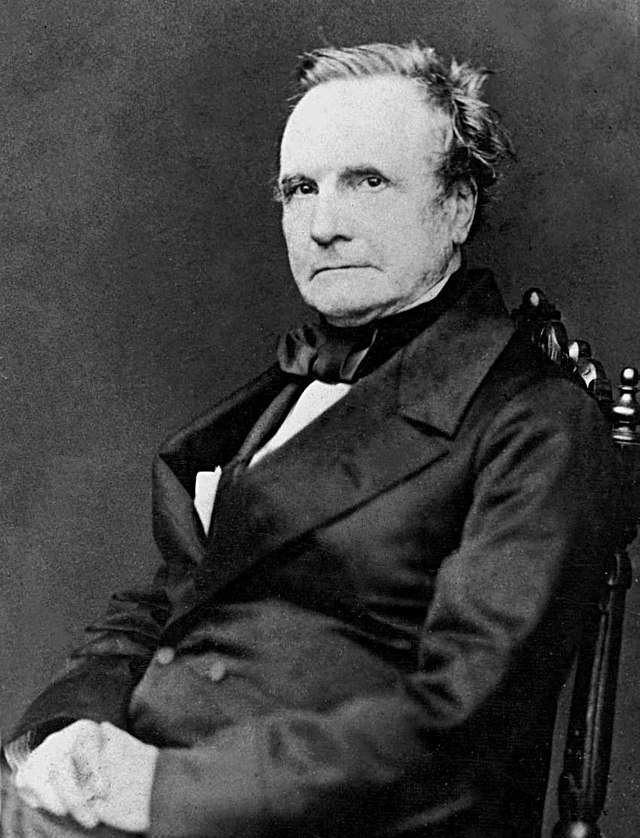

SÉCULOS IV - VI
Os computadores mais antigos vêm desde períodos mais remotos da humanidade (4000 A.c)
O mais reconhcecido em se tratando de seu funcionamento nessa época é, semsombra de dúvidas, o ábaco.
Aparelho simples responsável pela feição de cálculos ligados à necessidade de mercadores, estudiosos e
outros.

Imagem de ábaco antigo. Disponível em: https://descompliqueamatematica.blogspot.com/2013/04/tipos-de-abaco-e-sua-historia.html
Aparelhos como a “calculadora mecânica”, La Pascaline e outras também surgiram. Contudo, o ábaco apresentou a maior simplicidade e praticidade dentre os seus concorrentes.
Século XIX
Surgimento da primeira máquina responsável por cálculos extremamente complexos, a Máquina Analítica de Charles Babbage. Desenvolvida pelo mesmo, a máquina funcionava através da entrada de dados (cartões), processamento e saída. Gerando, dessa forma, também, os primeiros algoritmos da história com o auxílio de Ada Lovelace
Imagem de Charles Babbage. Disponível em: https://pt.wikipedia.org/wiki/Charles_Babbage
Imagem de Máquina Analítica. Disponível em:https://ufsj.edu.br/portal2-repositorio/File/prof_ngoulart/notas_aula/AEDS1/A_historia_do_computador.pdf
SÉCULO XX - PARTE 1
Surgimento do, enfim, avanço científico responsável pela mudança do modo de pensamento, ação, ainda que unida à desgraça da Segunda Guerra Mundial. Neste Período, a primeira máquina desenvolvida foi a famosa “Enigma” de Allan Turing; máquina feita para que o raciocínio das mensagens alemãs, a fim de suas traduções e, graças à Enigma, foi possível
Imagem da Enigma. Disponível em: https://horizontes.sbc.org.br/index.php/2016/11/alan-turing-e-a-enigma/
Por fim, há o surgimento da famosa e reconhecida Eniac, considerada o primeiro computador eletrônico presente em toda a história. Com a função de realizar cálculos balísticos, a máquina desenvolveu cálculos de intenso processamento e influenciou no surgimento de outras.
Imamge Eniac. Disponível em: https://tecnoblog.net/especiais/eniac-primeiro-computador-do-mundo-completa-65-anos/
SÉCULO XX - PARTE 2
Surgimento dos primeiros computadores pessoais (personal computers), ou PC (aos mais íntimos). A famosíssima empresa International Business Machine (IBM) foi responsável pelo desenvolvimento da IBM 5051 PC.

Imagem 5051 IBM PC. Disponível em: https://pt.wikipedia.org/wiki/IBM_Personal_Computer_XT
SÉCULO XXI
Internet é distribuída e, por fim, seu acesso se torna maior entre a população. Maior número de dispositivos entre a população (tablets, celulares, computadores...). Além da presença do gigantesco avanço no mundo computacional (novas linguagens, menor custo de hardware...). Até que surge, por fim, o que, até o momento, consideramos o maior avanço dos últimos anos da tecnologia: o computador quântico. Uma máquina responsável por cálculos de maior processamento já registrado, com funcionamento a partir de quibits.

Imagem computador quântico. Disponível em: https://www.instagram.com/p/Cv4rl0VrGBQ/

Imagem Pc atual. Disponível em: https://www.brazilpc.com.br/computador-brazil-pc-corporativo